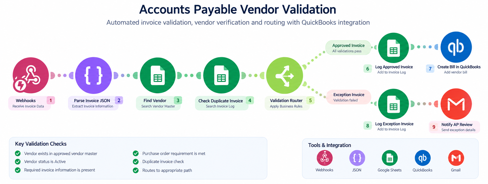

Accounts Payable Automation Overview
Accounts payable teams often spend significant time reviewing invoice information, confirming vendor status, checking purchase order requirements, identifying possible duplicate invoices, and determining whether an invoice is ready for processing.
This project demonstrates how accounts payable automation can apply those operational controls consistently. As an example of workflow and business process automation, invoice data enters the workflow, vendor information is validated against an approved Vendor Master, invoice requirements are checked, and the transaction is routed either to an exception path or to QuickBooks Online for downstream AP processing.
Challenge
Reduce repetitive accounts payable validation work while maintaining consistent vendor, invoice, purchase order, and duplicate controls.
Automation Solution
Build a Make.com AP workflow using webhooks, JSON, Google Sheets, business rules, routers, filters, Gmail, and QuickBooks Online.
Operational Impact
Create a repeatable invoice validation process that separates exceptions from approved invoices and prepares validated transactions for QuickBooks Online processing.
Accounts Payable Automation Workflow
The workflow below illustrates how invoice information enters the automation, moves through vendor and invoice validation, and is routed to either an exception-review path or the QuickBooks Online processing path.

How the Accounts Payable Automation Works
- A custom webhook receives structured invoice information.
- JSON parsing identifies fields including Vendor ID, Vendor Name, Invoice Number, Invoice Date, Amount, Purchase Order, Payment Terms, and Vendor Email.
- Google Sheets searches the approved Vendor Master using the Vendor ID.
- The workflow confirms that the vendor exists and is active.
- Required invoice fields and applicable purchase order requirements are checked.
- The Invoice Log is searched using the Vendor ID and Invoice Number to identify possible duplicate invoices.
- A Make.com router directs the invoice to either the approved processing path or the exception management path.
- Approved invoice data is passed to the QuickBooks Online module for accounts payable processing.
- The approved transaction is recorded in the Invoice Log.
- Exceptions are logged and an automated Gmail notification is sent for human review.
AP Vendor & Invoice Validation Rules
The workflow uses defined business rules to determine whether an invoice can continue through automated processing or requires human review.
- The vendor must exist in the approved Vendor Master.
- The vendor must be active.
- Required invoice information must be present.
- Purchase order requirements must be satisfied when applicable.
- The Vendor ID and Invoice Number combination must not already exist in the Invoice Log.
- Only invoices that pass validation are routed to the QuickBooks Online processing step.
- Invoices that fail a control are routed for exception review rather than continuing automatically.
QuickBooks Online AP Integration
QuickBooks Online serves as the downstream financial system after the automated validation controls have been completed.
The workflow is intentionally designed so invoice data does not move into QuickBooks Online until vendor, invoice, purchase order, and duplicate checks have passed.
This creates a clear operational control point between automated invoice validation and downstream accounts payable processing.
Accounts Payable Exception Management
Not every invoice should continue through an automated AP process without review. Unknown vendors, inactive vendors, incomplete invoice information, missing required purchase orders, or possible duplicate invoices are routed to an exception path.
The exception workflow creates visibility into the issue and sends an automated Gmail notification so the transaction can be reviewed before further processing.
This approach uses automation for repeatable validation while preserving human review for transactions that do not meet the defined accounts payable controls.
AP Automation Tools & Methods
Automation Challenges & Problem Solving
One of the most important design considerations was determining which accounts payable decisions could be automated and which conditions should continue to require human review.
Vendor validation required the workflow to compare incoming invoice information against a controlled Vendor Master rather than relying only on the information contained in the invoice.
Duplicate invoice detection required a search of historical invoice records before approving a new transaction. The QuickBooks Online integration was positioned after these controls so it serves as a downstream processing step rather than bypassing the validation process.
Operational Impact
This accounts payable automation creates a more structured invoice-processing workflow by applying repeatable validation rules before transactions continue to the financial system.
- Reduces repetitive manual vendor and invoice validation.
- Applies accounts payable business rules more consistently.
- Helps identify possible duplicate invoices before further processing.
- Improves visibility into invoices requiring additional review.
- Creates a structured AP exception-management process.
- Provides a centralized invoice validation log for tracking and review.
- Connects validated accounts payable information with QuickBooks Online for downstream processing.
Accounts Payable & Automation Skills Demonstrated
Have a Financial Process That Needs Improvement?
Doe Farm Solutions helps businesses identify repetitive financial and administrative tasks, inefficient workflows, and opportunities for business process automation. Let's discuss whether a practical automation solution could improve your accounts payable or other operational processes.
Schedule a Free 15-Minute Consultation